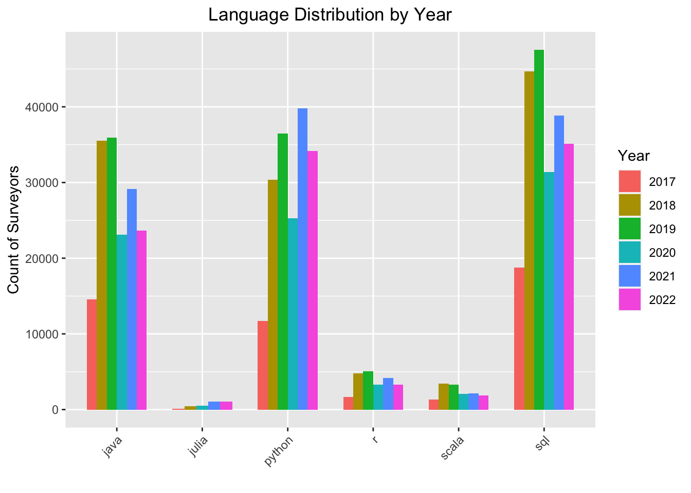
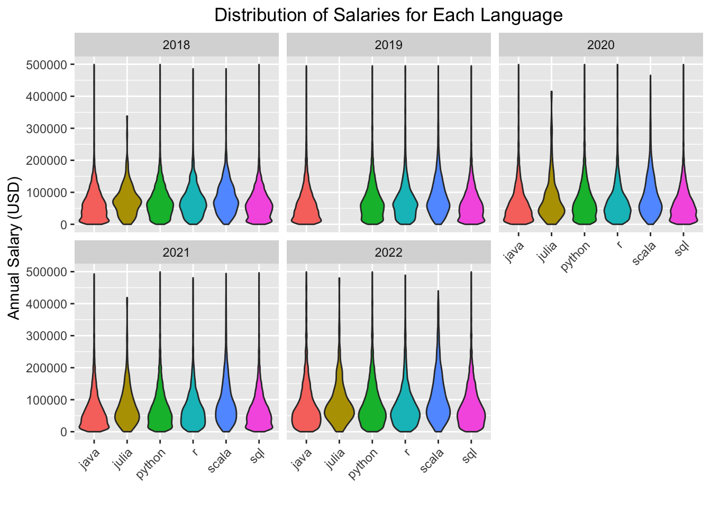
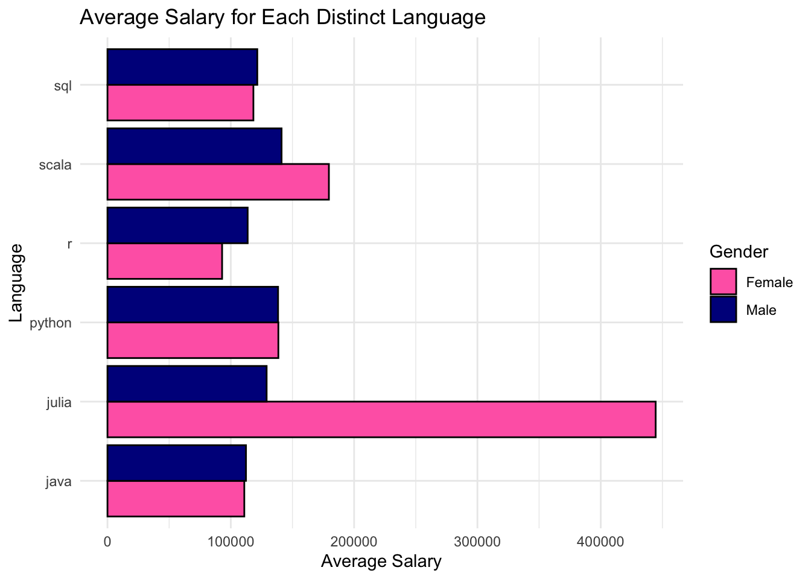
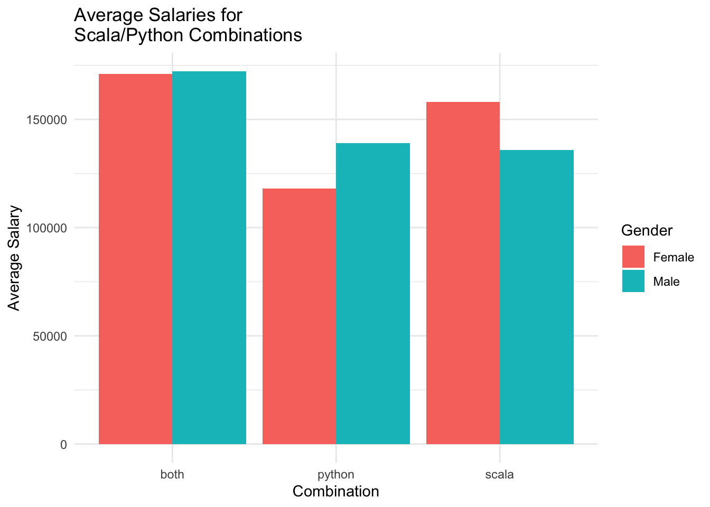

source("functions.r") # we'll attach the functions.r file with our submission
library(dplyr)
options(scipen=999)
wide_stack <- get_stack_df(persist = TRUE, load_from_cache = TRUE)Project 3
Abstract
brief talk about the data
Introduction
what the data is about
Data Cleaning
Analysis
Language Distribution by Year
In order to show the language distributions, we will need to manipulate the original data frame (wide_stack).
# convert wide stack to long stack - only use this for distribution of languages, no avg calculations
long_stack <- wide_stack %>%
pivot_longer(cols = all_of(language_cols),
names_to = "Language",
values_to = "LanguageYesOrNo",
names_prefix = "language_") %>%
filter(LanguageYesOrNo == "yes") %>%
select(Year, Gender, AnnualSalary, Language, Employment, LanguageYesOrNo)Now we can plot the distribution of languages over the years.

Language Growth Over Time
Let’s plot the growth of languages over time…

From the above graph, we can see that Python and SQL are the most commonly used languages as of 2022. Julia seems to have been steadily growing since 2017, which makes sense as it is a relatively new language.
Distribution of Salaries by Year, by Language
Let’s now look at the distribution of salaries over the years. We will need to create a new data frame that has the following attributes: - includes years 2018 to 2022, as 2017’s salary data is not in USD - includes only those who work full time - removes those who make over $500,000, as the majority of the distributions are below this amount - remove those who did not input a salary
# create a new dataframe
salary_languages_df <- long_stack %>%
# we're not using 2017 since the salaries are not in USD
filter(Year %in% 2018:2022) %>%
# filter so only full time employees are included
filter(str_detect(Employment, "full")) %>%
# remove outliers (there are a few outliers with $500k+ salary, majority of the distributions are below 500k)
filter(AnnualSalary < 500000) %>%
select(Year, Gender, AnnualSalary, Language, Employment)
# Filter out rows with missing AnnualSalary
salary_languages_df <- salary_languages_df[!is.na(salary_languages_df$AnnualSalary), ]
Average Salaries for Each Distinct Language
It would be interesting to see the average salaries for each distinct language, split by gender. In order for us to calculate these averages, we need to create a new data frame that has the following attributes:
- excludes people who know more than one language
- excludes people who know no languages
- includes only those who work full time
- excludes the year 2017, as the 2017 salary data is not in USD
# Determine people with 'yes' in more than one column and remove them
onelanguage_df <- wide_stack %>%
filter(rowSums(.[, language_cols] == "yes") <= 1) %>%
# create a new column with the one language each person knows
mutate(KnownLanguage = case_when(
python == "yes" ~ "python",
sql == "yes" ~ "sql",
java == "yes" ~ "java",
scala == "yes" ~ "scala",
r == "yes" ~ "r",
julia == "yes" ~ "julia",
TRUE ~ "unknown" # Handle cases where no language is known
)) %>%
# remove the cases where no language is known
filter(KnownLanguage != "unknown") %>%
# we're not using 2017 since the salaries are not in USD
filter(Year %in% 2018:2022) %>%
# filter so only full time employees are included
filter(str_detect(Employment, "full")) %>%
select(Year, Gender, Employment, AnnualSalary, KnownLanguage)Once we create this new data frame, we need to group the data by gender and language, and then calculate the averages, which is shown below:
# filter for genders "female" and "male" and find the averages
# for each language and gender combination
average_salaries <- onelanguage_df %>%
filter(Gender %in% c("Female", "Male")) %>%
group_by(Gender, KnownLanguage) %>%
summarise(AvgSalary = mean(AnnualSalary, na.rm = TRUE))Now, we can plot the data:

As you can see, the average female salary for scala is an outlier, with its average salary being over $400,000. Let’s look into this more…
| Count of Surveyors in Average Salary Calculation | ||
| Language | Gender | Count |
|---|---|---|
| java | Male | 13802 |
| java | Female | 891 |
| julia | Male | 124 |
| julia | Female | 4 |
| python | Male | 18870 |
| python | Female | 1040 |
| r | Male | 541 |
| r | Female | 86 |
| scala | Male | 506 |
| scala | Female | 27 |
| sql | Male | 34273 |
| sql | Female | 2095 |
We can see from the above table that there are only 4 females in this subset of data that know julia. This would not be an accurate representation of salaries for females who know only julia. We could infer the same conclusion about females who know scala, as there are only 27 females who know only scala versus 506 men.
Case Study: Language Combinations
Do people who know both python and scala make more money on average than someone who knows only scala? Only python?
In order to answer this question, we will need to create a new data frame that does the following:
- filters for years 2018 - 2022, as 2017’s salaries are not in USD
- filter for instances where people know both scala & python
- filter for instances where people know scala, but not python
- filter for instances where people know python, but not scala
- filter for full time employees only
wide_stack_no2017 <- wide_stack %>%
# filter for years 2018-2022, since 2017 is not in USD
filter(Year %in% 2018:2022)
scala_python <- bind_rows(
wide_stack_no2017 %>%
# Filter for people who know both Python & Scala
filter(python == "yes" & scala == "yes") %>%
# Filter so only full-time employees are included
filter(str_detect(Employment, "full")) %>%
select(Year, Gender, AnnualSalary) %>%
mutate(status = "both"),
wide_stack_no2017 %>%
# Filter for people who know only Python
filter(python == "yes" & scala == "no") %>%
# Filter so only full-time employees are included
filter(str_detect(Employment, "full")) %>%
select(Year, Gender, AnnualSalary) %>%
mutate(status = "python"),
wide_stack_no2017 %>%
# Filter for people who know only Scala
filter(python == "no" & scala == "yes") %>%
# Filter so only full-time employees are included
filter(str_detect(Employment, "full")) %>%
select(Year, Gender, AnnualSalary) %>%
mutate(status = "scala")
) %>%
filter(Gender %in% c("Female", "Male")) %>%
group_by(status, Gender) %>%
summarise(AvgSalary = mean(AnnualSalary, na.rm = TRUE), .groups = "drop")Now, we can plot the data:

From the above graph, we can infer that knowing a combination of the two languages will likely result in a higher salary.